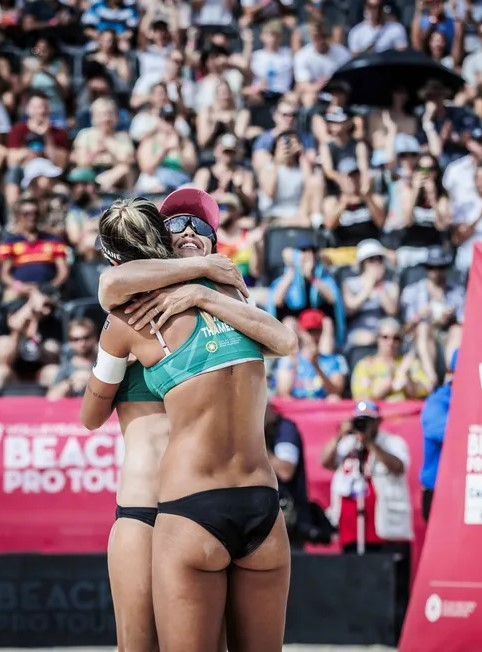

Destaques da semana
-

Brasil fatura ouro e bronze em etapa do Circuito Mundial de vôlei de praia
Algumas informações sobre o volei
-
O objetivo e motivação do site: é informar as pessoas sobre o esporte volei e aproxima-las sobre as novidades que estão acontecendo atualmente nesse universo
-
Como funciona: O jogo é iniciado por uma das equipes que dão o saque, lançando a bola para o lado da equipe adversária. Após o saque, a bola deve ultrapassar a rede, onde os jogadores adversários evitam que caia em seu campo, utilizando no máximo três toques. O jogo é dividido em sets, quem vencer os três primeiros, ganha a partida.
-
O objetivo do jogo: O objetivo do jogo é fazer com que a bola passe sobre a rede fazendo-a tocar no chão da quadra adversária, evitando que os adversários façam o mesmo.
-
Beneficios do volei: O vôlei é um exercício que desenvolve a coordenação motora, aumenta a agilidade, a massa muscular, alivia o stress e emagrece, além disso, o gasto calórico é de aproximadamente 400 Kcal/hora
-
Sobre os maleficios: É interessante observar o uso do tênis adequado para não ocasionar desgaste no calcanhar.